| Тема 4. Кросс платформенная среда разработки Visual Studio. | ||
| Назад | ||
Настройка среды разработкиCреда разработки Visual Studio .NET, как и среды всех современных средств разработки, может быть настроена согласно потребностям конкретного пользователя. В этом разделе мы рассмотрим различные способы настройки среды Visual Studio .NET, а также узнаем, какие окна и инструменты она содержит. При первом запуске Visual Studio .NET можно настроить среду разработчика в соответствии с типом задач, которые предстоит решать с ее помощью. Сведения об этом вводятся на странице My Profile (рис. 1).
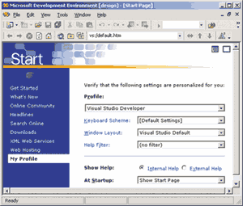 Рис. 1. Диалоговая панель My Profile Поля на этой странице имеют следующее назначение:
Стартовая страницаЕсли в диалоговой панели My Profile в поле At Startup указано Show Start Page, при последующих запусках Visual Studio можно увидеть экран стартовой страницы (рис. 2).
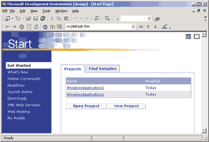 Рис. 2. Стартовая страница Visual Studio .NET В левой части этой страницы находятся ссылки на Web-ресурсы, такие как страница с обновлениями и дополнениями к продукту (What’s New), ссылки на страницы сообществ разработчиков, новостей MSDN и поиска в MSDN нужных разделов. Там же можно открыть страницу My Profile. В правой части страницы можно выбрать один из проектов, над которым недавно велась работа, открыть произвольный проект или создать новый. Создание нового проектаЕсли в меню среды разработки выбрать пункт File / New / Project, на экране появится диалоговая панель New Project (рис. 3). Приложение в Visual Studio .NET может состоять из нескольких проектов, совокупность которых называется термином Solution (решение).
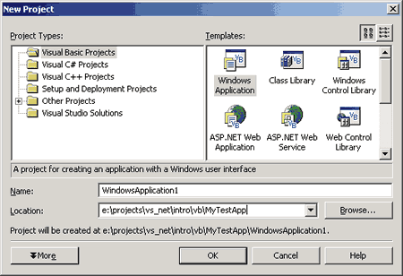 Рис. 3. Диалоговая панель New Project В левой части этой диалоговой панели можно выбрать тип проекта. В общем случае можно выбрать проекты, созданные на языках программирования Visual Basic .NET, C#, C++, а также на ряде других. Этот список зависит от того, какие языки были выбраны при установке Visual Studio, а также от того, были ли приобретены и установлены дополнительные языки программирования сторонних производителей. В правой части экрана можно выбрать один из предложенных шаблонов для данного типа проектов:
При создании нового проекта в поле Location необходимо указать имя каталога, в котором следует сохранить его файлы. При этом в данном каталоге автоматически будет создан другой каталог, имя которого совпадает с именем проекта. Например, при создании проекта MyProject и указании в поле Location каталога С:\Projects соответствующее решение будет создано в каталоге С:\Projects\MyProject\ MyProject.sln. По умолчанию проекты сохраняются в файле My Documents\Visual Studio Projects\Имя проекта. Окна среды разработки Visual StudioВ данном разделе мы рассмотрим окна, имеющиеся в среде разработки (Integrated Development Environment, IDE) Visual Studio .NET. Как уже было сказано выше, вид среды разработки Visual Studio .NET зависит от того, какие настройки были указаны в окне MyProfile. На рис. 4 представлен вид среды разработки, установленный для типа разработки Visual Basic Developer.
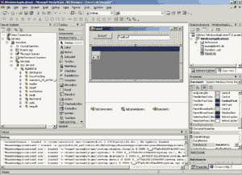 Рис. 4. Среда разработки Visual Studio .NET Как и большинство современных приложений, среда разработки Visual Studio .NET содержит меню и набор инструментальных панелей. В левой части среды разработки присутствует элемент управления со значком окна Server Explorer; это окно появится, если указатель мыши окажется над данным значком. Там же имеется и значок окна Toolbox - оно появится, если поместить указатель мыши над этим значком. В правой части экрана находится окно Solution Explorer. В нем можно увидеть, из каких проектов состоит решение и какие файлы входят в состав этих проектов. Ниже окна Solution Explorer расположено окно свойств (Properties). Это окно содержит список атрибутов объекта, выделенного в данный момент. Давайте выясним, зачем нужны эти и другие окна среды разработки. Окно ToolboxВ окне Toolbox (его можно отобразить на экране с помощью команды меню View / Toolbox) находится список элементов управления, которые можно использовать на формах приложения. То, какой набор компонентов доступен в данный момент, зависит от типа разрабатываемого приложения. Например, если в данный момент разрабатывается приложение типа Windows Forms, в этом окне будут присутствовать элементы управления, которые можно использовать в Windows-приложениях; если же разрабатывается Web-форма, в этом окне будут находиться инструменты для работы с элементами управления Web Controls, и т.д. При необходимости можно изменить отображаемый в окне Toolbox набор элементов управления, добавив другие компоненты .NET или элементы ActiveX (в том числе созданные независимыми производителями). Для этой цели можно использовать команду меню Tools / Customize Toolbox и с помощью диалоговой панели Customize Toolbox (рис. 5) выбрать элементы управления ActiveX или элементы управления .NET, которые мы хотим отобразить в окне Toolbox.
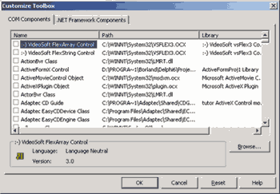
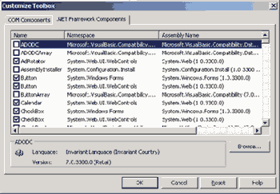 Рис. 5. Диалоговая панель Customize Toolbox Окно Solution ExplorerКак мы уже знаем, решение - это набор проектов, из которых состоит приложение. Окно Solution Explorer (которое можно отобразить на экране с помощью команды меню View / Solution Explorer) позволяет просматривать состав проектов, входящих в решение, в виде иерархической структуры, а также связи между проектами и их компонентами (рис. 6). Компонентами проектов могут быть формы, классы, модули, а также другие файлы, которые требуются для создания приложения. Если нужно отредактировать компонент проекта, следует дважды щелкнуть по его имени в окне Solution Explorer.
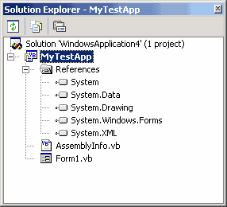 Рис. 6. Окно Solution Explorer С помощью кнопок, расположенных в верхней части окна Solution Explorer, можно указать, что именно должно отражаться в среде разработки:
Окно Class ViewОкно Class View (доступно с помощью команды меню View / Class View) позволяет просмотреть список свойств и методов созданных в приложении классов (рис. 7). Выбрав свойство или метод, можно щелкнуть на его имени правой клавишей мыши и выбрать одно из возможных действий с данным свойством или методом. По двойному щелчку по имени класса произойдет его загрузка в редактор кода.
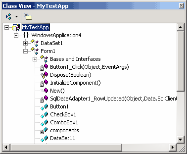 Рис. 7. Окно Class View Окно Server ExplorerОкно Server Explorer (команда меню View / Server Explorer, рис. 8), позволяет просматривать сведения о службах, выполняющихся на конкретных серверах. К таким службам, в частности, относятся службы Crystal Reports Services, журнал событий, очереди сообщений, службы серверов баз данных, таких как Microsoft SQL Server.
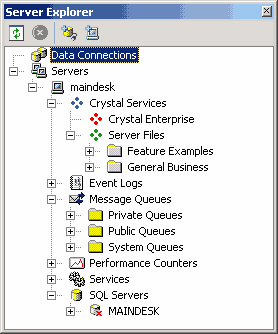 Рис. 8. Окно Server Explorer Большинство этих служб представлено в окне в виде иерархического дерева, позволяющего просматривать сведения, связанные с данными службами, и иногда добавлять новые элементы. С помощью перетаскивания значка службы или ее элемента в дизайнер можно организовать ее использование в приложении. Так, при переносе значка таблицы сервера баз данных на форму разрабатываемого приложения можно создать компонент DataAdapter для извлечения данных из этой таблицы. Окно PropertiesОкно Properties (команда меню View / Properties Window) предназначено для изменения свойств элементов управления и других классов создаваемого приложения (рис. 9). Свойства можно отсортировать по алфавиту или по категориям (для этой цели в верхней части этого окна имеются соответствующие кнопки). Редактирование свойств может осуществляться путем ввода значения, выбора его из выпадающего списка либо с помощью установки его значения в отдельной диалоговой панели - это зависит от типа конкретного свойства. Таким же образом можно изменять свойства проекта, приложения и т.п.
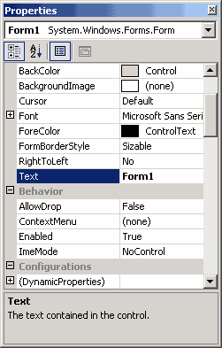 Рис. 9. Окно Properties Окно Object BrowserОкно Object Browser, доступное с помощью команды меню View / Other Windows / Object Browser (рис. 10), так же как и окно Class View, позволяет просмотреть список классов, их свойств и методов. Однако Object Browser позволяет просмотреть все компоненты, на которые ссылается класc, а также, при необходимости, компоненты, на которые нет ссылок в данном проекте, тогда как с помощью окна Class View можно просматривать сведения только о классах из данного проекта. С помощью Object Browser можно также просмотреть объявления свойств и методов.
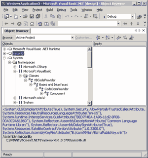 Рис. 10. Окно Object Browser Окно Task ListОкно Task List, доступное с помощью команды меню View / Other Windows / Task List (рис. 11), содержит список задач (TO DO list), ошибок компиляции и другую информацию. В этот список можно внести свое задание, щелкнув по надписи Click here to add a new task, добавив в код комментарий вида «TODO: <текст задачи>» либо выбрав из контекстного меню строки кода пункт Add a Task List Shortcut. При щелчке по тексту задачи в этом окне редактор кода откроется в месте, где находится соответствующий комментарий.
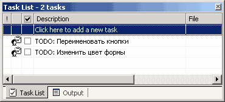 Рис. 11. Окно Task List Режимы работы среды разработкиCреда разработки Visual Studio .NET содержит два типа окон - окна инструментов и окна документов. Окна инструментов (часть из которых была описана выше) доступны с помощью команд меню View и некоторых других, и их доступность зависит от типа приложения и от того, какие модули расширения (дополнительные утилиты и инструменты, в том числе произведенные сторонними разработчиками) добавлены к среде разработки. В окнах же документов можно редактировать компоненты проектов. Окна инструментовС окнами инструментов можно производить различные манипуляции. В частности, можно заставить их автоматически появляться и исчезать, группировать их в виде многостраничного блокнота, варьировать их расположение в среде разработки, делать их «плавающими» и даже отображать на дополнительном мониторе, если использование такового поддерживается операционной системой. Некоторые окна инструментов, например окно Web Browser, можно создавать в виде нескольких экземпляров (это можно сделать, выбрав пункт меню Windows / New Window). Можно также заставить окна инструментов автоматически исчезать, если они в данный момент не являются активными, - в этом случае на экране отображаются название и пиктограмма окна, над которой можно поместить указатель мыши, если окно нужно отобразить целиком. Если необходимо предотвратить исчезновение окна с экрана, следует щелкнуть мышью по изображению канцелярской кнопки на заголовке окна. Режимы отображения окон инструментовVisual Studio .NET поддерживает два режима отображения окон документов в среде разработки: многодокументный интерфейс (Multiple Document Interface, MDI) и интерфейс в виде блокнота (Tabbed Documents). Выбрать нужный режим отображения можно в разделе Environment / General диалоговой панели Options (ее можно отобразить с помощью команды меню Tools / Options). Окна документовОкна документов предназначены для редактирования компонентов проектов. Их взаимное расположение зависит от выбранного режима отображения окон в среде разработки. Редактор кодаНиже будут рассмотрены возможности, предоставляемые редактором кода Visual Studio .NET. Как и в прежней версии Visual Studio, после набора имени объекта и ввода точки на экране появляется список свойств и методов данного объекта. При вводе имени метода можно увидеть на экране описание метода и его параметров. Окно редактирования можно разбить на несколько частей, в которых будут отображаться разные фрагменты кода. Допустимо также отобразить второе окно редактирования с помощью пункта меню Window / New Window. В редакторе кода можно осуществлять контекстный поиск и замену текста в текущей процедуре, текущем модуле или в выделенном фрагменте кода с помощью стандартной диалоговой панели Windows Find and Replace. В строке для поиска могут содержаться символы «*» и «?», означающие любую последовательность символов и любой символ соответственно. Возможен также поиск и замена фрагментов текста во всех файлах проекта. В этом случае следует использовать диалоговые панели Find in Files и Replace in Files. Помимо фрагментов кода можно искать также названия классов и структур - для этой цели используется диалоговая панель Find Symbols. Результаты поиска отображаются в окне Find Symbol Results (рис. 12).
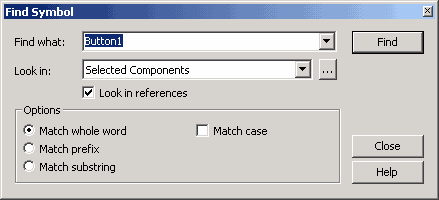
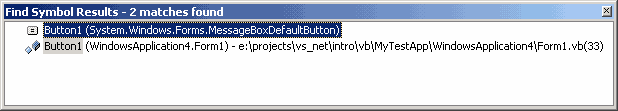 Рис. 12. Диалоговая панель Find Symbol и окно Find Symbol Results В редакторе кода можно установить закладку на какую-либо строку кода и вернуться к ней позже. Закладки не исчезают и при сохранении проекта. Можно также создать комментарий, связанный с выделенным фрагментом текста, с помощью команды меню Edit / Advanced / Comment Selection. Возможно перемещение фрагментов текста посредством мыши в другое место, копирование фрагментов, а также перемещение фрагментов текста из редактора кода в окно Toolbox (рис. 13).
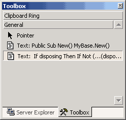 Рис. 13. Окно Toolbox с фрагментами текста Фрагменты текста в окне Toolbox сохраняются до закрытия Visual Studio и могут при необходимости быть перенесены в редактор кода. С помощью комбинации клавиш Shift+Ctrl+ Enter можно развернуть окно редактора кода на весь экран и вернуть его в исходное состояние, а комбинации Ctrl+Tab и Shift+Ctrl+Tab позволяют перемещаться между окнами документов. Буфер обменаVisual Studio .NET позволяет сохранить до 20 фрагментов текста или иных элементов проектов в буфере обмена (Clipboard Ring). Удерживая клавиши Ctrl и Shift, можно просматривать по очереди элементы, хранящиеся в буфере обмена, нажимая на клавишу V и поочередно отображая эти элементы в редакторе кода. После нахождения необходимого фрагмента можно поместить его в редактор кода, отпустив клавиши Ctrl и Shift. Можно также просмотреть содержимое буфера обмена, щелкнув по закладке Clipboard Ring в окне Toolbox, выбрать нужный элемент и перетащить его в окно редактора кода. МакросыСреда разработки Visual Studio .NET позволяет записывать макросы подобно тому, как это делается в приложениях Microsoft Office. Записанный макрос можно сохранить либо на время текущего сеанса работы с Visual Studio, либо в отдельном проекте, который затем можно добавить к любому решению. Работа с элементами управленияВ среде Visual Studio имеется ряд инструментов для манипуляции элементами управления на этапе разработки приложений Windows Forms. Рассмотрим их подробнее. При создании форм для ввода данных нередко требуется установить определенный порядок обхода элементов управления при нажатии клавиши Tab. Для просмотра и изменения этого порядка следует выбрать пункт меню View / Tab Order и установить порядок обхода элементов управления, выбирая их последовательно с помощью мыши (рис. 14).
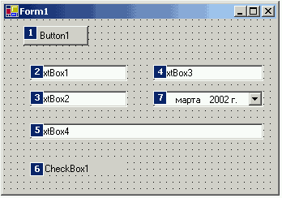 Рис. 14. Установка порядка обхода элементов управления Если установить свойство Font формы до того, как на нее будут помещены какие-либо элементы управления, все вновь помещаемые на форму элементы управления унаследуют это свойство формы. При необходимости присвоить одно и то же значение какого-либо свойства нескольким элементам управления можно выделить их (обведя их с помощью мыши или выбрав с помощью щелчков мыши при нажатой клавише Shift или Ctrl) и установить нужные значения общих свойств этих элементов с помощью окна Properties. Для выбора нескольких элементов внутри контейнера следует сначала установить на него фокус ввода. Редактор форм Visual Studio .NET обладает различными средствами выравнивания элементов на форме (выравнивание по вертикали, горизонтали, установка одинакового размера, установка равных расстояний между элементами по вертикали или горизонтали). Все эти средства можно найти в меню Format, а для их использования следует выбрать нужные компоненты на форме и затем применить к ним одну из команд данного меню. Можно также указать, какие элементы расположены поверх других. Если выбрать пункт меню Format / Lock Controls, все элементы управления на данной форме будут заблокированы. Блокировка элементов управления применяется тогда, когда пользовательский интерфейс приложения уже спроектирован и нужно избежать случайного смещения элементов управления при щелчках на них с целью добавления связанного с ними кода. Итак, мы видим, что среда разработки Visual Studio .NET стала гораздо более удобной, нежели среда разработки Visual Studio 6, - в ней появилось много новых инструментов, средств конфигурации и средств, упрощающих проектирование приложений. В следующей части данной статьи мы продолжим знакомство с Visual Studio .NET и рассмотрим создание Windows-приложений с помощью этого средства разработки. |
||
| Конспект подготовлен Бакулиным А. М. 2022 год. | ||